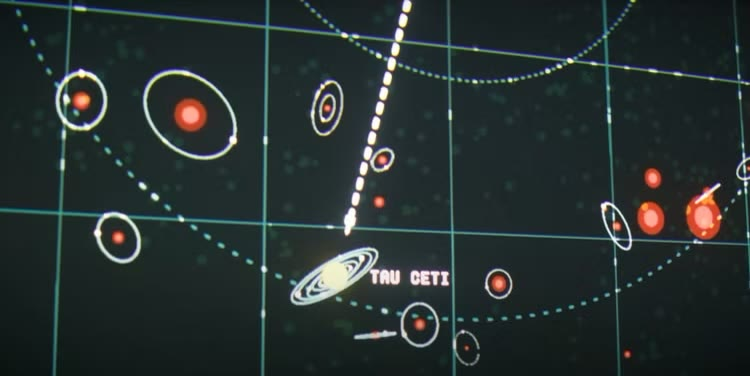
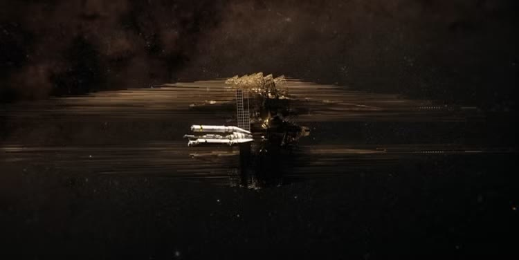
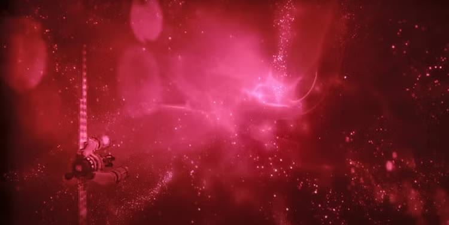

Project Hail Mary
Rating
5/5
Premise
Ryland Grace is a school teacher who is also a genius biologist who came up with a paper about extra terrestrial beings who may potentially be made up of things outside of water. He was mocked and exiled for his belief in non-water-based life forms but recruited by the government to check out the Astrophages (alien organisms that were taking the sun’s energy). He eventually figures out that the life forms are indeed water based but they collectively reach Venus to breed. Venus has a chemical makeup that makes them multiply (carbon dioxide) This discovery leads him into the top secret branch of this government project and gets him a spot with the top secret team to discover why a star (Tau Ceti) in a neighboring star system has shown weak signs of the Astrophages whereas their trail is bright everywhere else. This leads them to form a mission called Project Hail Mary where they must discover the reason for the Astrophages faintness at this star and see if they can discover the solution to stop the Astrophages from eating up the sun’s energy.

As they prepare for this mission, they begin breeding Astrophages as an energy source for their space ship, this space ship will be manned by 3 of the team members who are willing to sacrifice their lives for the potential savior of mankind. An explosion caused by an Astrophage accident ends up killing an important scientist who was bound to be on the mission which leads Ryland as the backup scientist for the trip. He is chosen for his expert knowledge in Astrophages but he does not want to go. This leads to an altercation where he is forcibly drugged into an induced coma and brought on to the mission. The movie actually starts with him waking on the ship with amnesia. He eventually remembers everything as the movie progresses but he realizes he’s the only one who survived the interstellar trip.

When he nears Tau Ceti, he notices another ship. This is where he meets Rocky, another life form except his species is ammonia-based. He's a cute spider like, rocky, intelligent life form. He also was the sole survivor on his ship. They build a bond from their shared mission of saving their planets. Rocky is from the planet Erid, in the 40 Eridani star system, in the movie they explain that the atmosphere from each other's planets would destroy each other. This becomes an issue for them when they try to work together but they build around it. Eridians are incredibly talented at building. They can build solid structures designed for high-pressure, ammonia-rich atmosphere. The material they use is called xenonite. From ChatGPT:
- Humans build around water/oxygen/low pressure.
- Eridians build around ammonia/high pressure/high temperature.
- Humans use visual labels, screens, and windows.
- Eridians use sound, vibration, texture, and material geometry.
With their team work they discover the reason why Astrophages were dying out around Tau Ceti. There were living organisms eating the Astrophages. These were described as natural predators named Taumoeba. With this discovery they were able to create a hatching system on the ship and get ready for their flights home. At the very end Ryland discovers that the organisms leaked through the hatch system and began eating through the Astrophage fuel storage. He realizes that this is probably happening to Rocky's ship as well (Rocky has no way of figuring this out on his own, his senses are similar to echolocation not vision. He would not be able to figure out what is going on or why before it is too late) so he makes the decision to abandon his trip home and backtrack to save Rocky.

The movie ends with both planets saved. Earth receives the Taumoeba samples with the new micro-ogranisms from Tau Ceti and begins a plan to breed them and use them to destroy the Astrophages. Ryland and Rocky are back on Erid. They form a bubble atmosphere for Ryland to live in, it is a beach-like environment where he has access to a home, sand, water, and he also is shown as a teacher, teaching the Eridians human scientific knowledge, including radiation, things the Eridians have not learned on their own. In the end Rocky asks Ryland if he's ready to go home, Ryland responds that he needs some time to think about it, Rocky says take your time.
Reflection
This movie gave me the same awe-inspiring feeling as Interstellar, I watched Interstellar in college and it made me think deeply about space, the future, and technology. This movie did the same, in fact it felt even more relevant to my life than Interstellar did at the moment in college.
I realized that energy is the base layer of everything. Everything in life is an abstraction of energy allocation, cells, jobs, human beings, plants, the world, technology, ai. When you distill everything to its purest form you can trace back with first principles an energy allocation problem. The role humans play in this world is deciding where to allocate energy, that is due to our unique sense of value and taste. When energy is scarce, humans fight and go to war for it. When energy is abundant, humans also decide where the attention must go.
I mentioned in my Stripe Sessions reflection that energy was a recurring theme. Sam Altman said himself that the demand for compute is uncapped due to AI. The bottleneck is energy.
Energy → raw materials → data centers → compute → inference.
In Project Hail Mary energy was also the base layer problem. If humans did not act fast, the Astrophages would absorb all of our sun’s solar energy. Humans had to reallocate all their resources to solve this problem. Without doing that they only had 30 years to survive. This was the same problem for the Eridians.
Because ai is so efficient, the abundance in knowledge and automation will change the calculus in allocation of energy. This is why it is changing the way everyone works, every industry, every aspect of life that uses energy. It is the multiplier in energy efficiency and since energy is the base layer of everything ai will compound everything. The next step for humanity in utilizing this technology is leveling up in the Kardashev scale. We are currently around 0.7. Kardashev 1 will be harnessing all of our planet's energy, Kardashev 2 will be harnessing all of our star's energy, and Kardashev 3 will be harnessing all of our galaxy's energy. I believe ai will push us forward and this is the path we will take which will expand our reach, create new industries, and unlock abundance in all aspects of our life since the base layer, energy, will be abundant as we rise in this scale.
Subscribe
Get new posts by email.